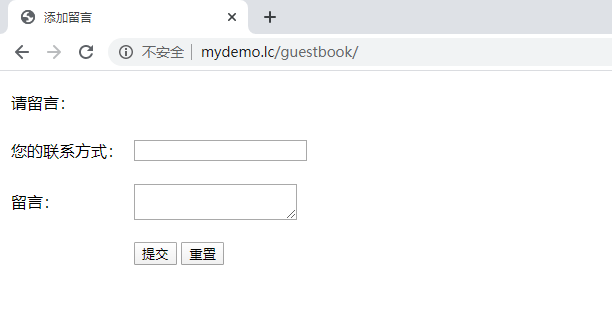

8.2.2 添加留言
上节已经说到新建控制器guestbook，其中自动生成的index动作，我们就作为添加留言的页面。 1、 生成表单和模板变量 在indexAction中添加registerForms()方法生成表单，同时设置模板变量title为“添加留言”，使页面标题栏显示为添加留言。namespace app\controller\guestbook; class IndexAction extends Controller { /** * 初始化 */ protected function __action() {} /** * 表单注册 */ public function registerForms() { $this->form('form_edit') ->init(ocUrl('/guestbook/index')); } /** * GET输出 */ public function display() { $vars = array('title' => '添加留言'); $this->assign($vars); } /** * 提交后处理 */ public function submit() {} /** * Ajax处理 */ public function api() {} }2、 新建表单HTML 在模板文件中添加HTML代码，使用$form_edit调用表单对象。<?php echo $form_edit->begin();?> <table width="798" border="0"> <tr> <td height="42" colspan="2">请留言：</td></tr> <tr> <td width="119" height="46">您的联系方式：</td> <td width="669"> <label> <?php echo $form_edit->text('telephone');?></label></td> </tr> <tr> <td height="48">留言：</td> <td> <label> <?php echo $form_edit->textarea('content');?></label></td> </tr> <tr> <td height="48"> </td> <td> <label> <input type="submit" name="Submit" value="提交" /> <input type="reset" name="Submit2" value="重置" /></label> </td> </tr> </table> <?php echo $form_edit->end();?>打开页面可以看到：  3、提交保存 在表单中添加联系方式和内容，然后点提交按钮可以保存数据。 （1）在application/service目录手动添加一个GuestbookService类来处理业务逻辑；namespace app\service; use app\model\entity\database\GuestbookEntity; class GuestbookService extends BaseService { /** * 添加一行 * @param $data * @return mixed */ public function addRow($data) { $entity = GuestbookEntity::build(); $entity->data($data); return $entity->save(); } }（2）在indexAction中添加submit()方法，保存数据。namespace app\controller\guestbook; use app\service\GuestbookService; class IndexAction extends Controller { /** * 初始化 */ protected function __action() {} /** * 表单注册 */ public function registerForms() { $this->form('form_edit') ->init(ocUrl('/guestbook/index')); } /** * GET输出 */ public function display() { $vars = array('title' => '添加留言'); $this->assign($vars); } /** * 提交后处理 */ public function submit() { $data = $this->request->getPost(); $this->validator ->addRule('telephone', 'notEmpty') //校验联系电话 ->addRule('content', 'notEmpty') //校验留言内容 ->validate($data); $result = GuestbookService::build()->addRow($data); return $result; } /** * Ajax处理 */ public function ajax() {} }